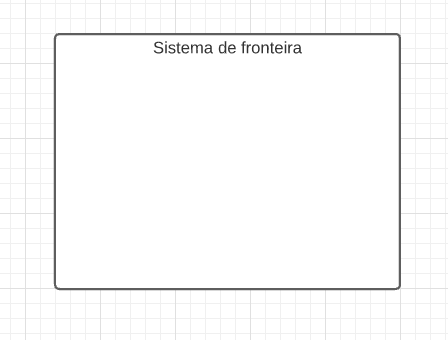

Casos de Uso
Histórico de versão
| Data | Versão | Modificação | Autor(es) |
|---|---|---|---|
| 04/02/2022 | 0.1 | Criação do documento e tabelas de caso de Uso | Kayro César |
| 04/03/2022 | 0.2 | Adição da parte téorica do Diagrama de casos de Uso | Klyssmann Oliveira |
| 05/03/2022 | 0.3 | Diagrama de casos de Uso | Klyssmann Oliveira e Kayro César |
| 05/03/2022 | 0.4 | Revisão | Eduardo Maia e José Luís |
1. Introdução
Casos de uso são documentos textuais utilizados para especificar requisitos e possuem um detalhamento maior que as histórias de usuário. A recomendação é sejam escritos na fase de especificação dos requisitos e geralmente são escritos pelos próprios desenvolvedores do sistema, mas podem ser compreendidos e validados pelos usuários (VALENTE, 2020).
Já um diagrama de caso de uso é uma metodologia usada na análise do sistema para identificar, esclarecer e organizar os requisitos do sistema que são empregados em UML (Unified Modeling Language), uma notação padrão para a modelagem de objetos e sistemas do mundo real (ALERYANI, 2016).
Existem quatro símbolos principais que são utilizados nos diagramas de caso de uso: (1) Atores; (2) Casos de uso; (3) Associação; e (4) Sistema de fronteira. A tabela 1 apresenta estes simbolos.
Tabela 1: Simbolos do Diagrama de Casos de Uso
| Notação | Função | Símbolo |
|---|---|---|
| (1) Atores | é uma pessoa ou um grupo de pessoas fora do sistema desempenha um papel em uma ou mais interações com o sistema, representa de onde a informação vem e para onde vai |  |
| (2) Casos de uso | mostra todas as funções do sistema |  |
| (3) Associação | representa a conexão entre casos de uso e atores |  |
| (4) Sistema de fronteira | determina o limite do sistema |  |
Fonte: Elaboração dos autores
2. Metodologia
No documento de casos de uso textual, o primeiro aspecto a ser incluso é a utilização de uma perspectiva de um ator que deseja utilizar o sistema para atingir um determinado objetivo. O ator costuma ser um usuário humano e um elemento externo em relação ao sistema. Primeiramente, o caso de uso enumera os passos a serem realizados pelo ator e cada caso possui duas listas de passos (fluxo normal e extensões. O fluxo normal é o caminho ideal a ser percorrido pelo usuário, já as extensões representam caminhos alternativos na execução de um passo ou possíveis situações de erro (VALENTE, 2020).
3. Resultados
Utilizando a metodologia apresentada, foram produzidos os seguintes casos de uso:
3.1. Registrar o ponto
Tabela 2: Caso de uso - Registrar o ponto
| Fluxo | Passo | Ação | Ator | RF |
|---|---|---|---|---|
| Normal | 1 |
Funcionário seleciona a opção de registrar o ponto | Funcionário de uma empresa | RF01, RF02, RF03, RF08 |
| Normal | 2 |
Funcionário informa o horário do registro do ponto | Funcionário de uma empresa | - |
| Normal | 3 |
Funcionário informa alguns dados adicionais acerca do registro do ponto ( foto e descrição ) | Funcionário de uma empresa | RF18, RF31 |
| Normal | 4 |
Aplicativo salva o registro do ponto | Funcionário de uma empresa | - |
| Normal | 5 |
Aplicativo mostra que o registro do ponto foi realizado com sucesso | Funcionário de uma empresa | - |
| Extensão | 2a |
Funcionário informa um horário inválido (solicitar horário novamente) | Funcionário de uma empresa | - |
| Extensão | 4a |
Funcionário desiste de registrar o ponto | Funcionário de uma empresa | - |
| Extensão | 5a |
Aplicativo cancela a operação | Funcionário de uma empresa | - |
Fonte: Elaboração dos autores
3.2. Registrar falta
Tabela 3: Caso de uso - Registrar falta
| Fluxo | Passo | Ação | Ator | RF |
|---|---|---|---|---|
| Normal | 1 |
Funcionário seleciona a opção de registrar falta | Funcionário de uma empresa | RF17 |
| Normal | 2 |
Funcionário informa a duração da sua falta (dia(s) ou horas) | Funcionário de uma empresa | - |
| Normal | 3 |
Funcionário informa alguns dados acerca do registro da falta | Funcionário de uma empresa | - |
| Normal | 4 |
Aplicativo salva o registro da falta | Funcionário de uma empresa | - |
| Normal | 5 |
Aplicativo mostra que o registro da falta foi realizado com sucesso | Funcionário de uma empresa | - |
| Extensão | 2a |
Funcionário informa uma duração (dias ou horas) inválida (solicitar duração novamente) | Funcionário de uma empresa | - |
| Extensão | 4a |
Funcionário desiste de registrar o ponto | Funcionário de uma empresa | - |
| Extensão | 5a |
Aplicativo cancela a operação | Funcionário de uma empresa | - |
Fonte: Elaboração dos autores
3.3. Apagar registros passados
Tabela 4: Caso de uso - Apagar registros passados
| Fluxo | Passo | Ação | Ator | RF |
|---|---|---|---|---|
| Normal | 1 |
Funcionário seleciona o registro desejado | Funcionário de uma empresa | - |
| Normal | 2 |
Funcionário seleciona a opção de apagar | Funcionário de uma empresa | - |
| Normal | 3 |
Aplicativo pergunta se o usuário tem certeza da escolha | Funcionário de uma empresa | - |
| Normal | 4 |
Aplicativo apaga o registro desejado | Funcionário de uma empresa | RF05 e RF23 |
| Extensão | 4a |
Funcionário desiste de apagar o registro desejado | Funcionário de uma empresa | - |
| Extensão | 5a |
Aplicativo cancela a operação | Funcionário de uma empresa | - |
Fonte: Elaboração dos autores
3.4. Ativar a notificação de alarme
Tabela 5: Caso de uso - Ativar a notificação de alarme
| Fluxo | Passo | Ação | Ator | RF |
|---|---|---|---|---|
| Normal | 1 |
Funcionário seleciona a opção para ativar a notificação de alarme | Funcionário de uma empresa | - |
| Normal | 2 |
Funcionário escolhe se deseja ativar alarme para começar e terminar o trabalho ou intervalo | Funcionário de uma empresa | - |
| Normal | 3 |
Funcionário define se deseja antecipar o alarme | Funcionário de uma empresa | - |
| Normal | 4 |
Aplicativo ativa o alarme de acordo com o especificado pelo usuário | Funcionário de uma empresa | RF28 |
Fonte: Elaboração dos autores
3.5. Realizar Backup dos registros
Tabela 6: Caso de uso - Realizar Backup dos registros
| Fluxo | Passo | Ação | Ator | RF |
|---|---|---|---|---|
| Normal | 1 |
Funcionário seleciona a opção para realizar o Backup | Funcionário de uma empresa | - |
| Normal | 2 |
Funcionário seleciona o tipo de backup que deseja realizar(local ou nuvem) | Funcionário de uma empresa | |
| Normal | 3 |
Aplicativo pergunta se o usuário tem certeza da escolha | Funcionário de uma empresa | - |
| Normal | 4 |
Aplicativo apaga o registro desejado | Funcionário de uma empresa | RF28 |
| Extensão | 3a |
Funcionário desiste fazer o backup | Funcionário de uma empresa | - |
| Extensão | 4a |
Aplicativo cancela a operação | Funcionário de uma empresa | - |
Fonte: Elaboração dos autores
3.6. Gerar extrato de registros
Tabela 7: Caso de uso - Gerar extrato de registros
| Fluxo | Passo | Ação | Ator | RF |
|---|---|---|---|---|
| Normal | 1 |
Funcionário seleciona a opção para gerar um extrato dos seus registros | Funcionário de uma empresa | - |
| Normal | 2 |
Funcionário seleciona o intervalo de datas que o extrato deve levar em conta | Funcionário de uma empresa | - |
| Normal | 3 |
Funcionário seleciona quais critérios devem ser incluídos no extrato | Funcionário de uma empresa | - |
| Normal | 4 |
Aplicativo gera o extrato | Funcionário de uma empresa | RF32 |
| Normal | 5 |
Aplicativo informa que o extrato foi gerado e pergunta se o usuário deseja abri-lo | Funcionário de uma empresa | - |
| Extensão | 2a |
Funcionário seleciona o intervalo de datas inválido (solicitar o intervalo novamente) | Funcionário de uma empresa | - |
| Extensão | 3a |
Funcionário desiste de gerar o extrato | Funcionário de uma empresa | - |
| Extensão | 4a |
Aplicativo cancela a operação | Funcionário de uma empresa | - |
Fonte: Elaboração dos autores
3.7. Visualizar inconsistências nos registros de ponto
Tabela 8: Caso de uso - Visualizar inconsistências nos registros de ponto
| Fluxo | Passo | Ação | Ator | RF |
|---|---|---|---|---|
| Normal | 1 |
Funcionário seleciona a opção para visualizar as inconsistências nos registros de ponto | Funcionário de uma empresa | - |
| Normal | 2 |
Aplicativo exibe a lista de inconsistências (cada item da lista possui uma data) e a quantidade total das mesmas | Funcionário de uma empresa | RF12 |
Fonte: Elaboração dos autores
3.8. Diagrama de Casos de Uso

Clique aqui para ver o diagrama em tela cheia.
4. Legenda
RF - Requisito Funcional
5. Referências
VALENTE, Marco Túlio. Engenharia de Software Moderna: Princípios e Práticas para Desenvolvimento de Software com Produtividade, 2020.
ALERYANI, Arwa Y. Comparative study between data flow diagram and use case diagram. International Journal of Scientific and Research Publications, v. 6, n. 3, p. 124-126, 2016.